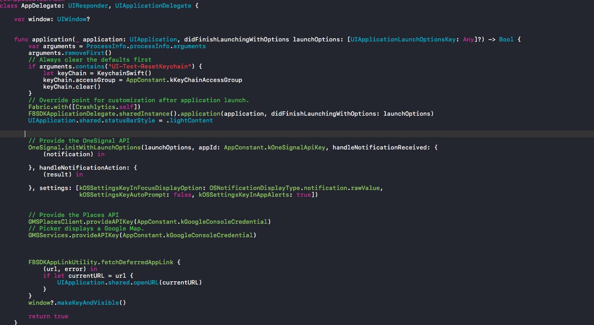
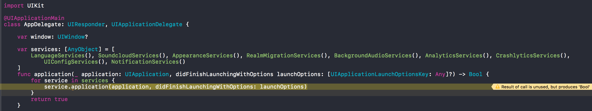

First of all, as an iOS developer, maybe you've seen your AppDelegate file is included too much things like this one

It include too much set up SDKs or UI stuff lie in there.
And also in a case you want to try a new SDK you've never use before and you have to make sure that your app still able to run correctly. Hmm too confused. There must be a better way
In the time i was working in my old company, I have learned a better way to make the AppDelegate more thinner.
For example, my app will have a list of config need to be set up in AppDelegate like
1. Localize set up
2. Google Analytics set up
3. Facebook Login SDK
4. Fabric and Crashlytics
5. OneSignal for notifications
6. A tracking SDK
7. Database migration (CoreData or Realm, etc)
I will split the list to nth Services files
For example: Google Analytics
class AnalyticsServices: NSObject, UIApplicationDelegate {
func application(_ application: UIApplication, didFinishLaunchingWithOptions launchOptions: [UIApplicationLaunchOptionsKey : Any]? = nil) -> Bool {
var configureError: NSError?
GGLContext.sharedInstance().configureWithError(&configureError)
// Optional: configure GAI options.
let gai = GAI.sharedInstance()
gai?.trackUncaughtExceptions = true // report uncaught exceptions
gai?.logger.logLevel = GAILogLevel.verbose // remove before app release
return true
}
}
If the SDK changed their function like the initializer or another method in the new versions. We can go directly to that SDK's Services file in our project and fix it without care about another SDK's Services.
Another example for the Database Migration
class RealmMigrationServices: NSObject, UIApplicationDelegate {
func application(_ application: UIApplication, didFinishLaunchingWithOptions launchOptions: [UIApplicationLaunchOptionsKey : Any]? = nil) -> Bool {
var config = Realm.Configuration(
schemaVersion: 16,
migrationBlock: { migration, oldSchemaVersion in
switch oldSchemaVersion {
case 16: break
default: break
}
},
deleteRealmIfMigrationNeeded: true
)
Realm.Configuration.defaultConfiguration = config
return true
}
}
So how can we call those Services class we have written. Go back to the project AppDelegate files. And do some trick like this one.

Now we will have a more cleaner AppDelegate file. If you want to remove a service just go to the array services and comment or delete it.